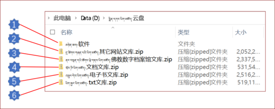

སྤྲིན་དཀར་ཡིག་མཛོད་ནི་བོད་ཀྱི་རིག་གནས་ཆེ་ཆུང་བཅུ་ལ་སོགས་དཔེ་ཆའི་ཡིག་ཆ་སྣ་མང་འཛོམས་པའི་མཛོད་ལྟ་བུ་ཞིག་ཡིན། རིག་མཚན་ཁག་མི་འདྲ་བ་འགར་དགོས་ཡོད་པས་རང་ཉིད་ཀྱི་དགོས་འདོད་ལྟར་ཕབ་ལེན་བྱས་ཆོག སྤྲིན་དཀར་ཡིག་མཛོད་ཕབ་ལེན་བྱེད་དགོས་ཚེ་འདིར་བསྣུན་དང་ཕབ་ལེན་བྱས་ཡོང་། གཤམ་དུ་སྤྲིན་དཀར་ཡིག་མཛོད་ནང་གི་རིག་ཚན་དག་དང་མཉེན་ཆས་བཀོལ་སྟངས་སོགས་ལ་རྒྱས་གཟིགས་གནང་བར་ཞུ།
སྤྲིན་དཀར་ཡིག་མཛོད་རྒྱལ་ནང་གི་དྲ་ཚིགས་ཝེ་ཡོན་(腾讯微云)སྟེང་བཞག་ཡོད། ཁེའོ་ཁེའོ་（QQ）དང་སྐད་འཕྲིན་གཉིས་གང་རུང་གི་ཐོ་འགོད་སྤྱད་ནས་ནང་འཛུལ་བྱེད་སྟངས་ལ་ལྟ་བར་བྱ།
🢥 སྤྲིན་དཀར་ཡིག་མཛོད་ངོ་སྤྲོད་ཀྱི་སློབ་ཚན་ཁ་ཕྱེ།
🢥 "འདིར་བསྣུན་"སྟེང་བསྣུན།
🢥 "继续访问"སྟེང་བསྣུན།
🢥 "登录"སྟེང་བསྣུན།
🢥 "微信账号登录"འདེམས།
🢥 རང་ཉིད་ཀྱི་ཁ་པར་གྱི་སྐད་འཕྲིན་(微信) ཁ་ཕྱེ་ནས་བཤེར་འབེབས་བྱོས།
🢥 "སྤྲིན་དཀར་ཡིག་མཛོད།-云盘"སྟེང་བསྣུན།
སྤྲིན་དཀར་ཡིག་མཛོད་ནང་ཡིག་ཆ་མང་པོ་ཡོད། ཕབ་ལེན་སྟབས་བདེ་དང་མགྱོགས་པོ་ཡོང་ཆེད་ནང་གི་ཡིག་ཆ་སྡེ་ཚན་འགར་བགོས་ཡོད། འདིར་ཡིག་མཛོད་གཅིག་ཕབ་ལེན་བྱེད་སྟངས་ལ་བལྟ་བར་བྱ། ཡིག་མཛོད་གཞན་རྣམས་ཀྱང་རིགས་བསྒྲེ་ནས་ཕབ་ལེན་བྱེད་དགོས།
🢥 "新建文件夹" སྟེང་བསྣུན།
🢥 ཡིག་སྣོད་ཀྱི་མིང་ལ་༼སྤྲིན་དཀར་ཡིག་མཛོད།云盘༽ བྲིས།
🢥 "腾讯微云" ཁ་ཕྱེ།
🢥 ཡིག་ཆ་འདེམས།
🢥 "普通下载" སྟེང་བསྣུན།
🢥 "保存" འདེམས།
🢥 ཡིག་མཛོད་གཞན་ལའང་རིགས་འདྲེས་བྱས་ནས་ཕབ་ལེན་བྱ་དགོས།

མཉེན་ཆས།-软件 ནི་ཁོ་དྲི་མཉེན་ཆས་དང། གྲོག་མ་ཡིག་རྐྱང་བཟོ་ཆས། ནགས་ཕྱི་འཚོལ་ཆས་བཅས་ཡོད་སའི་ཡིག་སྣོད་ཡིན། ཡིག་སྣོད་འདི་ནས་ཐད་ཀར་རང་གི་གློག་ཀླད་རིགས་གང་ཡིན་བལྟས་ཏེ་འཇུག་སྤྲོད་བྱ་རྒྱུའི་ཡིག་སྣོད་ཅིག་ཡིན། ཁོ་ཌི་མཉེན་ཆས་ནང་ཡིག་རྐྱང་ཡིག་སྣོད་ནང་འདྲེན་བྱས་ཏེ་རང་ཉིད་ལ་མཁོ་བའི་ཐ་སྙད་རིགས་དང་ལུང་ཚིག་སོགས་སྟབས་བདེ་དང་ཞིབ་ཚགས་ཀྱིས་འཚོལ་ཐུབ། གྲོག་མ་ཡིག་རྐྱང་བཟོ་ཆས་ནི་word ཝོར་ཌི་ཡིག་ཆ་རྣམས་ཡིག་རྐྱང་ལ་བསྒྱུར་ཆས་ཤིག་ཡིན། ནགས་ཕྱི་འཚོལ་ཆས་ནི་ཡིག་ཆ་རིགས་མི་འདྲ་བ་སྣ་ཚོགས་ནང་རང་ཉིད་ལ་མཁོ་བའི་ཐ་སྙད་སོགས་ཞིབ་ཚགས་ཀྱིས་འཚོལ་ཐུབ།
དྲ་ཚིགས་གཞན་པའི་ཡིག་མཛོད།-其它网站文库 ནི་དྲ་ཚིགས་གཞན་ནས་བླངས་བའི་ཡིག་ཆའི་རིགས་ཝོར་ཌི་དང་། འཕྲུལ་ཡིག ཡིག་རྐྱང། ཕེ་སྒྲེ་ཨེ་ཧྤེ་སོགས་འདྲ་མིན་ཡོད་སའི་ཡིག་མཛོད་ཅིག་ཡིན། རང་ཉིད་ཀྱི་དགོས་མཁོ་ལྟར་བཀོལ་སྤྱོད་བྱས་ཆོག
ནང་བསྟན་དཔེ་ཚོགས་ལྟེ་གནས་ཡིག་མཛོད། 佛教数字档案馆文库 ནི་ནང་བསྟན་དཔེ་ཚོགས་ལྟེ་གནས་ཀྱི་ལོ་མང་རིང་དཀའ་སྤྱད་འབད་བརྩོན་གྱི་མཁོ་སྒྲིགས་བྱས་པའི་ཡིག་མཛོད་ཅིག་ཡིན། འདིའི་ནང་དུ་རྒྱལ་བའི་བཀའ་བསྟན་གཉིས་གཙོས་པའི་གསུང་རབ་མང་པོ་ཞིག་ཡོད། དེ་དག་ཡིག་ཆའི་རིགས་ཝོར་ཌི་དང་། འཕྲུལ་ཡིག ཡིག་རྐྱང། ཕེ་སྒྲེ་ཨེ་ཧྤེ་སོགས་ཡོདཕབ་ལེན་བྱས་ནས་རང་ཉིད་ཀྱིས་དགོས་མཁོ་ལྟར་སྤྱད་ཆོག
ཝོར་ཌི་ཡིག་མཛོད།-文档文库 ནི་ཡིག་ཆའི་རིགས་(.docx)རྐྱང་པ་ཡོད་སའི་ཡིག་མཛོད་ཅིག་ཡིན། རང་ཉིད་ཀྱིས་འདོད་མོས་ལྟར་དགོས་པ་གང་ལའང་བཀོལ་སྤྱོད་བྱ་ཐུབ་པ་དང་བྱེད་བདེ་བ་ཞིག་ཡིན། འདིའི་ནང་གི་པོད་རེ་རེའི་མཚན་བྱང་གི་དབུ་རུ་OCR ཡོད་ས་རྣམས་ཟེར་འཛིན་བྱས་པ་ཙམ་ལས་ཞུ་དག་བྱས་མེད་པས། ལྟ་ཀློག་གི་རིན་ཐང་ཡོད་མེད་ཅི་རིགས་ཡིན་མོད། རང་ཉིད་ཀྱིས་ཞུ་དག་བྱ་ཐུབ་ན་ད་གཟོད་བཀོལ་སྤྱོད་ཀྱི་རིན་ཐང་ཡོད།
འཕྲུལ་དེབ་ཡིག་མཛོད།-电子书文库 ནི་ཡིག་ཆའི་རིགས་(.epub)རྐྱང་པ་ཡོད་སའི་ཡིག་མཛོད་ཅིག་ཡིན། འདིའི་ནང་ཡོད་པའི་འཕྲུལ་དེབ་རྣམས་ནི་ཁྱེད་ཀྱི་གློག་ཀླད་དང་ཁ་པར་ipad ཨེཕེཌི་སོགས་ཀྱི་ནང་ཕབ་ལེན་བྱས་ན་སྤྱོད་སྟབས་བདེ་བ་དང་ཀློག་བདེ་བའི་ཁྱད་ཆོས་ཡོད།
ཡིག་རྐྱང་ཡིག་མཛོད།-.txt文库 ནི་ཡིག་ཆའི་རིགས་(.txt)རྐྱང་པ་ཡོད་སའི་ཡིག་མཛོད་ཅིག་ཡིན། ཡིག་རྐྱང་ནི་རང་ཉིད་ཀྱི་འདོད་མོས་ལྟར་དགོས་པ་གང་ལའང་བཀོལ་ཆོག་པ་དང་སྤྱོད་བདེ་བའི་ཁྱད་ཆོས་ཡོད། ལྷག་དོན་དུ་ང་ཚོས་མཚམས་སྦྱོར་བྱས་པའི་ཁོ་ཌི་མཉེན་ཆས་ནང་བཀོལ་ན་ཐ་སྙད་བྱེ་བྲག་པ་དང་། ཡང་ན་ལུང་ཚིག་སོགས་ཐད་ཀར་འཚོལ་ཐུབ་པ་དང་སྟབས་བདེ་བ་ཡོད།